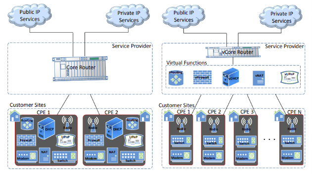

Network Function Virtualization
8. Casos de Uso

Figura X: Equipamentos do Local do Cliente, sem e com NFV. Extraído de https://arxiv.org/pdf/1509.07675.pdf no dia 03/06/2018.
- Equipamentos do Local do Cliente (CPE): Este é um dos casos mais aparentes dos benefícios da abstração
de função de rede virtual. Normalmente, os serviços são passados apenas por um roteador geral para os clientes, e
grande parte do serviço entregue pelas operadoras está localizado na casa dos clientes na forma de dispositivos físicos,
que requerem espaço para instalação e precedência nas funções executadas. Caso haja necessidade de atualizar os serviços
oferecidos por tais operadoras, por exemplo: fim de suporte para serviços suficientemente desatualizados; técnicos deveriam,
se mudar as configurações dos dispositivos não fosse o suficiente, trocar tais dispositivos para cada cliente, resultando
num capital operacional (esforço) grande demais apenas para manutenção e custo de compra de equipamentos, ou de manutenção,
para os clientes, que podem até deixar de receber tais atualizações.
Tomando proveito da virtualização que NFV promete, pode-se virtualizar algumas funcionalidades numa infraestrutura
gerenciada pela operadora, por exemplo, liberando espaço para os consumidores além de acelerar e facilitar o processo de
atualização dos tais serviços virtualizados: mudanças/funcionalidades extras podem ser adicionadas e implementadas diretamente
pela operadora, espalhando-as como atualizações para os clientes, reduzindo o custo e tempo de tal manutenção.